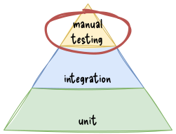

automatization
gergo.pinter@uni-corvinus.hu
file sharing issue


the figures are based on Figure 2.2 of the TortoiseSVN documentation
lock-modify-unlock solution


one developer can edit a file at the same time – not very effective
the figures are based on Figure 2.3 of the TortoiseSVN documentation
copy-modify-merge solution

the figures are based on Figure 2.4 of the TortoiseSVN documentation
copy-modify-merge solution #2


example: git, mercurial
the figures are based on Figure 2.5 of the TortoiseSVN documentation
centralized vs. distributed version control system

example: subversion

example: git, mercurial
the figures are based on Version control concepts and best practices - by Michael Ernst [1]
continuous integration

continuous integration environment

scheduled build

continuous deployment environment

- extension of a continuous integration environment
- deployment is another stage in the build script
- same triggers as in a CI environment (not just the scheduler)
blue–green deployment [7]

- two servers are maintained (“blue” and “green”)
- expensive
- at a given time, only one server is handling public request
- the other can be accessed only from a private network
- changes applied to the non-live server and verified
- when verified, the non-live server is swapped with the live server

shadow deployment

- two servers are maintained (“live” and “shadow”)
- for testing the performance and stability requirements
- on success, the release can be deployed to the live server as well
- specialized strategy, complex and (relatively) expensive to set up
canary deployment
- deployment in an incremental fashion
- starts with a small number of users
- and continues until 100% is reached
- allows to test updates in live environment
- on small groups of users
- before deploying to many users
- may involve telemetry

A/B testing is more of a testing approach than a deployment technique, but it works similarly to canary deployment. It involves reviewing two versions of updates in small set of users to identify which version perform better. [8]
devops
- software development + IT
operations
- collaboration
- agile mindset, set of principles [9]
- automation of the SDLC
- collaboration and communication
- continuous improvement
- focus on user needs with short feedback loops
- relies on automatization, CI and CD
- to build, test and release better software
- frequently, reliably, rapidly

{kind=link}
further reading: 11 DevOps Principles and Practices to Master: Pro Advice - by Fernando Doglio
what tools to use?
- CI and
CD became a
fundamental part of software development
- got integrated into services like GitHub, GitLab, BitBucket, JetBrains Space
- some solutions:
- Jenkins
- open source, self hosted
- GitHub Actions
- integrated to code hosting, free options
- example: course repository
- GitLab Pipelines
- integrated to code hosting, free options
- Travis CI
- free for open source projects
- Circle CI
- free options
- Jenkins

- Jenkins logo – The Jenkins project http://jenkins-ci.org/ | CC BY-SA
- GitHub icon – Font Awesome Free 5.4.1 by @fontawesome - https://fontawesome.com | CC BY
- GitLab icon by 292Jacob | CC BY-SA
{kind=link}
{kind=link}
dependencies
- choose carefully the software packages / components your software will depend on
- use well maintained software modules
- unmaintained modules have potential vulnerabilities
- aim for loose coupling regarding the dependency
- makes it easier to replace if needed

semantic versioning

- major version when you make incompatible API
changes
- a way of communicating changes
- minor version when you add functionality in a backward compatible manner
- patch version when you make backward compatible bug fixes
additional labels for pre-release and build metadata are available as
extensions to the major.minor.patch format | from semver.org
calendar versioning

format examples:
- YYYY.MINOR.PATCH
- micro is used instead of patch
- YYYY.MM.MINOR.PATCH
“CalVer is a versioning convention based on your project’s release calendar, instead of arbitrary numbers.” | calver.org
techniques to minimize context switching
- time blocking
- divide workday into blocks
- time batching
- do similar tasks in a batch
- prioritize tasks
- tackle the biggest task first in the morning
- turn off notifications
- adopt asynchronous communication
- e-mail, documentation, ADR